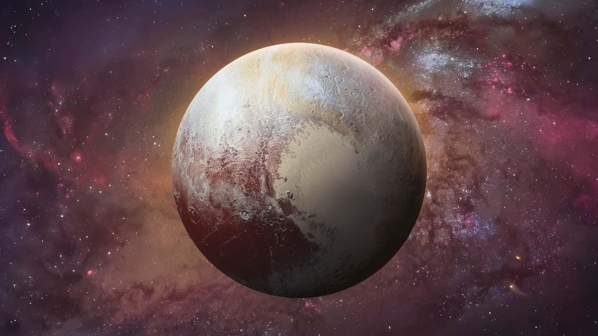
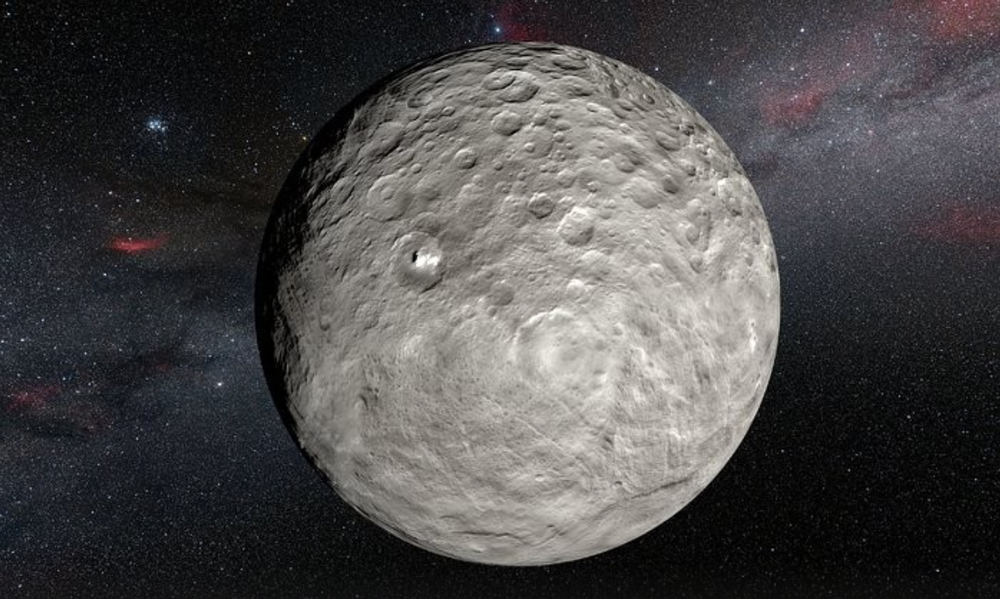
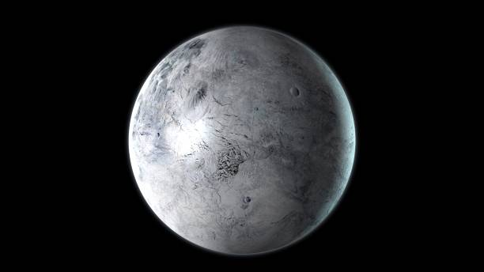
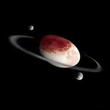
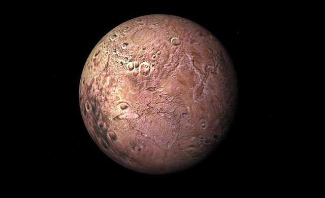

🪐 Planetas Anões
Em 2006, a União Astronômica Internacional (UAI) estabeleceu uma nova categoria de corpos celestes: os planetas anões. Um planeta anão é um corpo celeste que:
- Orbita o Sol.
- Tem massa suficiente para que sua própria gravidade o molde em uma forma aproximadamente esférica (equilíbrio hidrostático).
- Não "limpou a vizinhança" de sua órbita de outros objetos.
- Não é um satélite.
Atualmente, cinco corpos são oficialmente reconhecidos como planetas anões, mas muitos outros candidatos existem no Cinturão de Kuiper e além.
Plutão

Plutão foi considerado o nono planeta do Sistema Solar desde sua descoberta em 1930 até sua reclassificação em 2006. Localiza-se no Cinturão de Kuiper. É um mundo complexo e gelado, com montanhas de gelo, planícies de nitrogênio congelado e uma atmosfera tênue que aparece quando está mais próximo do Sol.
Diâmetro: 2.376 km
Luas Principais: 5 (Caronte, Nix, Hidra, Cérbero, Estige). Caronte é tão grande em relação a Plutão que o sistema é às vezes considerado um planeta anão duplo.
Ceres

Ceres é o maior objeto no Cinturão de Asteroides, entre Marte e Júpiter, e foi o primeiro asteroide a ser descoberto, em 1801. É o único planeta anão localizado no Sistema Solar interno. A missão Dawn da NASA revelou uma superfície com crateras e misteriosos pontos brilhantes, que se acredita serem depósitos de sal.
Diâmetro: Cerca de 940 km
Composição: Acredita-se que possua um núcleo rochoso e um manto de gelo, com potencial para um oceano de água líquida subsuperficial.
Eris

Eris é um planeta anão localizado na região do disco disperso, além do Cinturão de Kuiper. Sua descoberta em 2005 foi um dos fatores que levaram à redefinição do termo "planeta" e à criação da categoria de planeta anão. Eris é ligeiramente menor que Plutão em volume, mas é cerca de 27% mais massivo.
Diâmetro: Cerca de 2.326 km
Lua: 1 (Disnomia)
Haumea

Haumea é um planeta anão localizado no Cinturão de Kuiper. Destaca-se por sua forma extremamente alongada (elipsoidal), resultado de sua rotação muito rápida (um dia em Haumea dura apenas cerca de 4 horas). Também é notável por possuir um sistema de anéis e duas luas.
Dimensões Aproximadas: Cerca de 2.322 km × 1.704 km × 1.138 km
Luas: 2 (Hiʻiaka e Namaka)
Anéis: Possui um anel, descoberto em 2017.
Makemake

Makemake é outro planeta anão do Cinturão de Kuiper, o segundo objeto mais brilhante da região depois de Plutão. Sua superfície parece ser coberta por gelos de metano, etano e nitrogênio, conferindo-lhe uma cor avermelhada. Possui uma pequena lua.
Diâmetro: Cerca de 1.430 km
Lua: 1 (MK2)